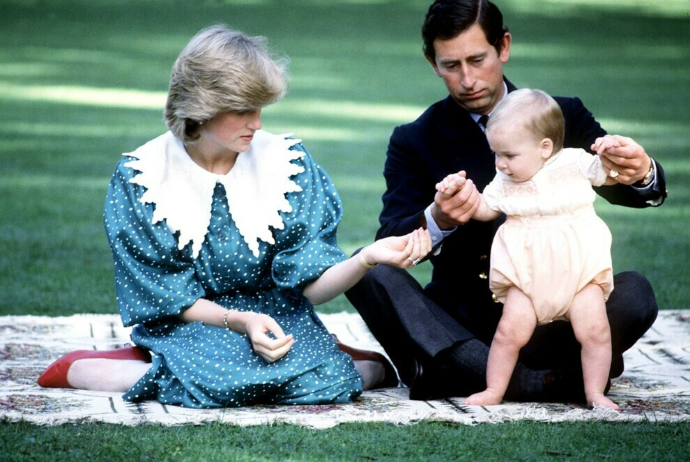
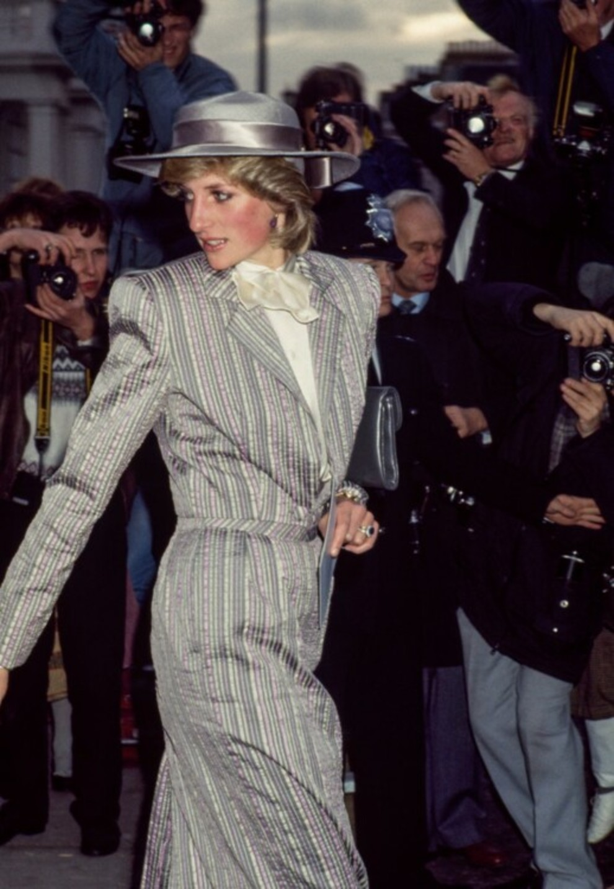

У принцеси Діани було дві сестри, леді Сара Маккоркодейл і леді Джейн Феллоуз, і два брати, граф Чарльз Спенсер і Джон Спенсер. Принцеса ніколи не знала останнього, оскільки він помер усього через кілька годин після свого народження в січні 1960 року.
Її батьки, Френсіс Шенд Кідд і Едвард Джон Спенсер, розлучилися, коли їй було вісім років.
Її бабуся з материного боку, Рут Рош, баронеса Фермой, була подругою й довіреною особою королеви Єлизавети, королеви-матері.
Вона виросла в маєтку Сандрингем, Норфолк, який належав королівській родині і який здавали в оренду королеві Єлизаветі II.
Принцеса Діана мріяла стати балериною, але їй сказали, що вона занадто висока.
Вона стала леді, коли її батько успадкував титул графа Спенсера. Тому леді Діана зберегла своє прізвисько «Леді Ді» навіть після того, як стала принцесою Уельською, вийшовши заміж за принца Чарльза.
Принцеса Діана навчалася вдома до 9 років, перш ніж вступити до школи-інтернату. Коли їй було 16, поїхала вчитися до Швейцарії, але тільки на один семестр.
До зустрічі із Чарльзом майбутня принцеса встигла спробувати себе на різних роботах, зокрема й нянею та вихователькою в дитячому садочку.
Принцеса Діана — перша в королівській родині мала оплачувану роботу.
Діана зустрічалася з принцом Чарльзом всього дванадцять разів, перш ніж вони одружилися. Їй тоді було 19, а йому 32.

Вона була першою в королівській родині, хто народив у лікарні. До неї всі монарші особи народжували вдома.
Вона писала листи-подяки кожній людині, від якої діставала дарунок. Ходять чутки, що вона написала тисячі листів після народження принца Вільяма. Відтоді деякі з них продано з аукціону за ціною від 2000 до 20 000 доларів.
У квітні 1987 світ облетіла світлина принцеси, яка потискує руку ВІЛ-інфікованому пацієнтові без рукавичок, демонструючи прагнення покінчити зі стигмою щодо людей, заражених ВІЛ, і підвищити поінформованість громадськості про це захворювання.
Елтон Джон, Джордж Майкл, Тільда Свінтон і Лайза Мінеллі — лише деякі з відомих друзів принцеси.
Улюбленою групою принцеси Діани була ABBA. Кейт Міддлтон і принц Вільям віддали належне Діані, зігравши пісні ABBA в день свого весілля у 2011 році.
Її обручку було вибрано з каталогу — вперше в історії королівської сім’ї.